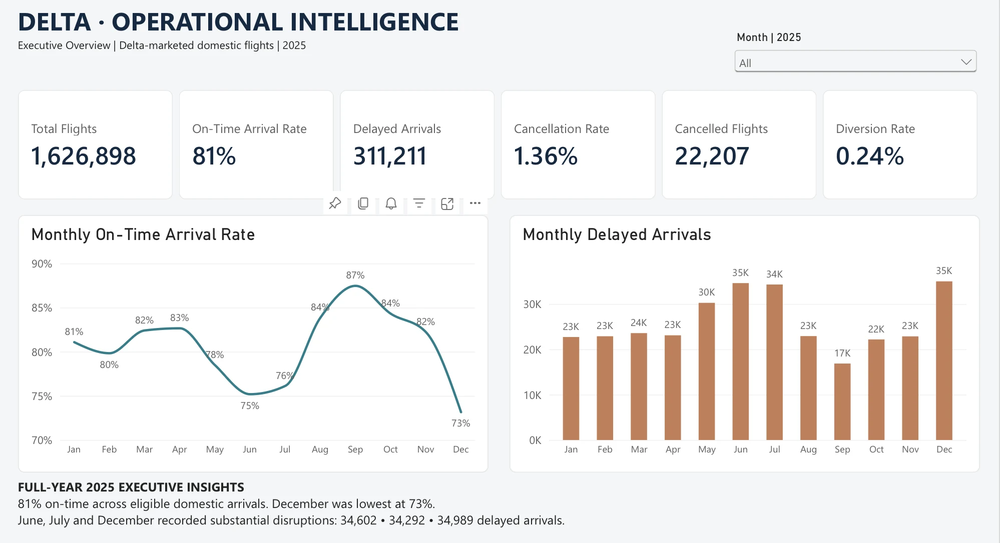
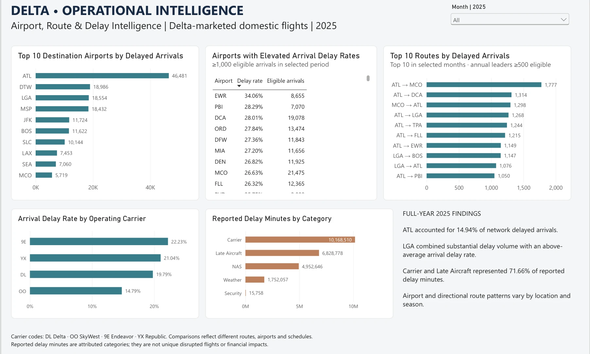
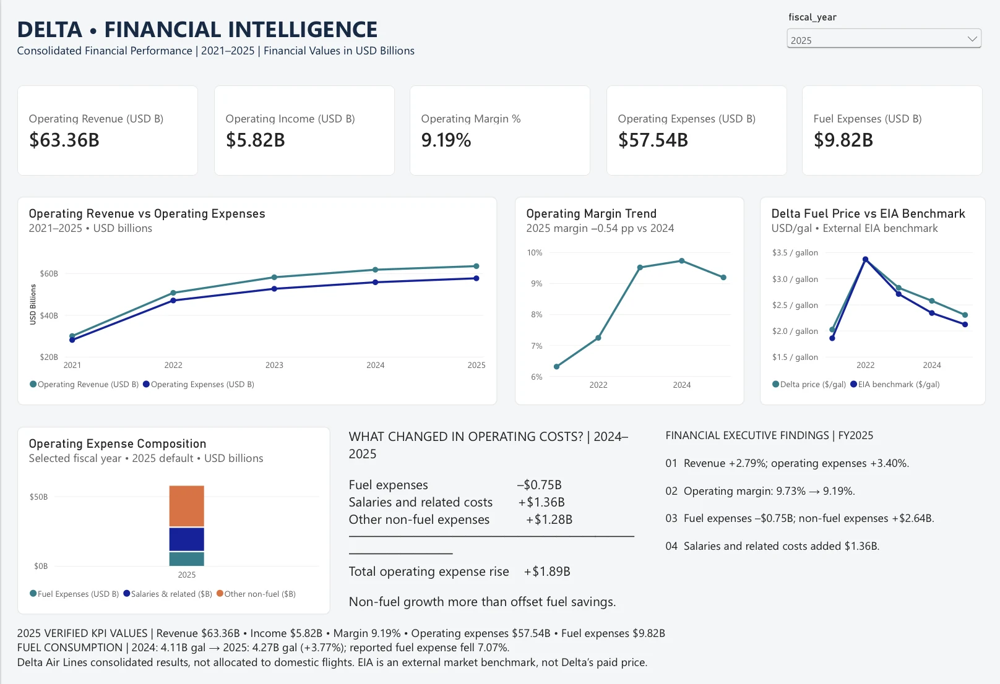

Prepare and validate
Python scripts clean flight records, standardize financial data, and prepare fuel-price information. Validation checks establish consistent definitions before analysis.
An independent analysis of Delta-marketed domestic flights and consolidated financial performance, from public-source data to executive reporting.
An end-to-end analytics project connecting operational reliability with financial performance.
I prepared and validated public datasets, built PostgreSQL tables and SQL reporting views, and developed three Power BI dashboard pages.

The project brings together 2025 domestic flight performance, five years of consolidated financial results, and fuel-market information. Operational and financial datasets answer complementary questions; consolidated financial results are not allocated to the domestic flight population.
Python scripts clean flight records, standardize financial data, and prepare fuel-price information. Validation checks establish consistent definitions before analysis.
PostgreSQL tables and dimensions organize the data. SQL handles data-quality checks, operational comparisons, financial trends, and seven reporting views.
Three Power BI pages cover executive performance, operational intelligence, and financial intelligence, with DAX measures and date-based filtering.
Selected excerpt from the project’s operational analysis. Eligible arrivals exclude cancellations, diversions, and missing arrival delays.
COUNT(*) FILTER (
WHERE cancelled = 0
AND diverted = 0
AND arrival_delay IS NOT NULL
) AS eligible_arrivals
ROUND(
100.0 * (eligible_arrivals - delayed_arrivals)
/ NULLIF(eligible_arrivals, 0), 2
) AS on_time_arrival_pct

The documented on-time rate is 80.56% among eligible completed arrivals. Cancellations and diversions are tracked separately.
The project identifies lower fuel expense alongside higher salary and other non-fuel costs, explaining why lower fuel costs did not translate directly into improved operating margin.
Carrier and late-aircraft categories account for 71.66% of reported delay-attribution minutes. These are reported categories, not independently proven root causes.